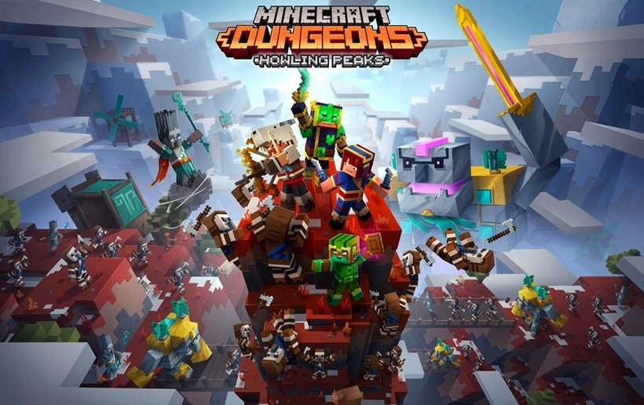

Donwload Minecraft Dungeons For Free
If you want to download minecraft dungeons preinstalled, then you are at the right place.
To start your downloading, click at the link below

Minecraft Dungeons is an action-adventure role-playing video game developed by Mojang Studios and Double Eleven,
and published by Xbox Game Studios on Windows and Xbox, and Mojang Studios on other platforms.
It was released on May 26, 2020, for Windows (via minecraftdungeons.net and Microsoft Store),
Xbox One, Nintendo Switch, and PlayStation 4, on September 15, 2020,
for Xbox Cloud Gaming, on November 10, 2020,
for the Xbox Series X|S, and on September 22, 2021, for Steam for Windows.[3]
Originally conceived as a singleplayer[18] game for the Nintendo 3DS,[19] Minecraft Dungeons takes inspiration from
classic dungeon crawlers. Its design was lead by Daniel "vraket" Brynolf and Pontus Hammarberg,
who both worked with Jens Bergensten on MUDs at Oxeye Games before joining Mojang.
It also features music by Peter Hont, Johan Johnson, Samuel Åberg, Eugnosis,
Rostislav Trifonov, and Grant Kirkhope.